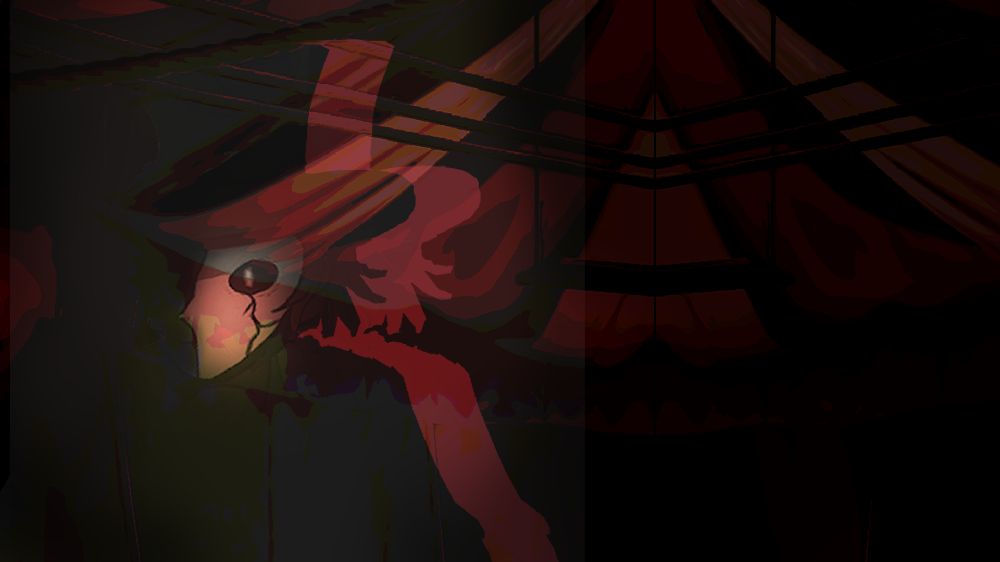

WIREFRAME & FLOW
Layout planning for dialogue hierarchy, controls, and interaction paths.
PROJECT SPOTLIGHT
Interface and motion studies focused on readability, atmosphere, and storytelling clarity across dialogue, menus, and transitions.
Layout planning for dialogue hierarchy, controls, and interaction paths.

Visual language passes for panel framing, icon shape, and typography rhythm.

Timing passes for dialogue transitions, hover states, and focus indicators.
Integrated screens tested over gameplay art for legibility and pacing.
I start with structure, then layer in style and motion where it supports usability. Animations are kept subtle and purposeful so emotional tone is enhanced without reducing clarity during play.